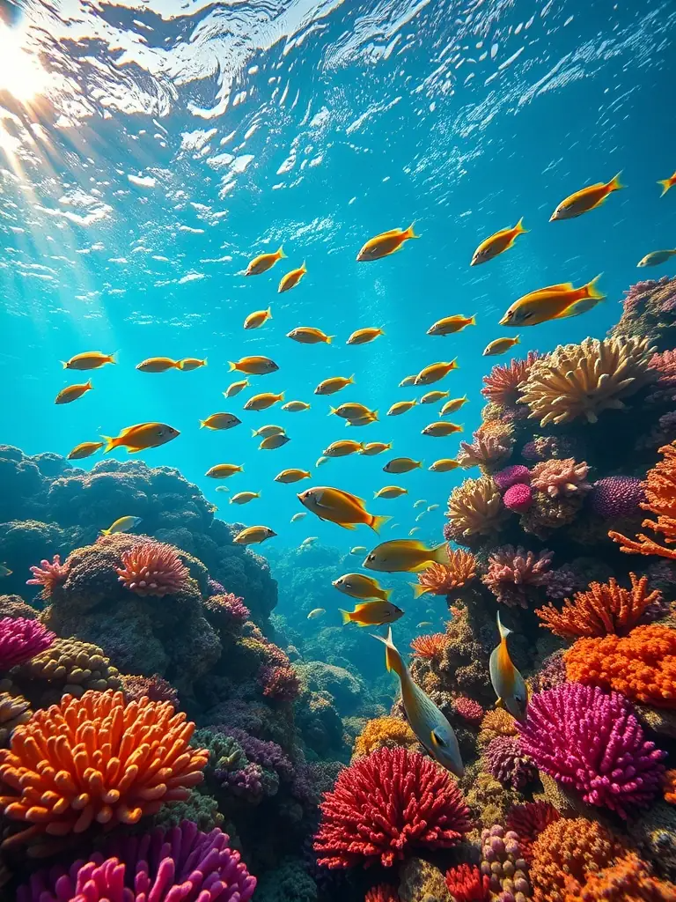
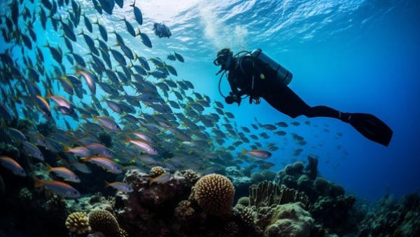
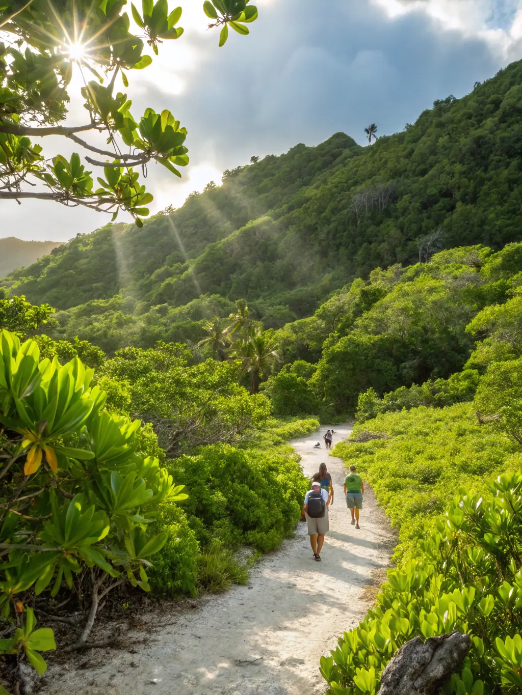
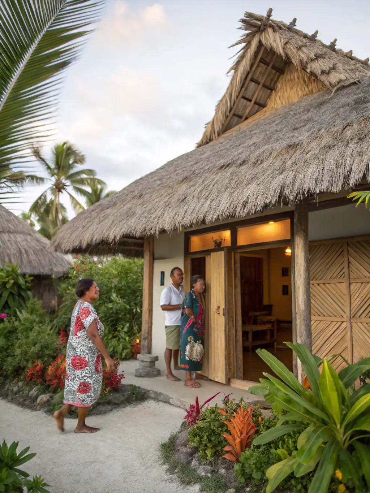

Snorkeling Adventures in Kiribati
Explore the stunning coral reefs and encounter vibrant marine life while snorkeling in the crystal-clear waters of Kiribati.

Diving in Pristine Waters
Dive into the pristine waters of Kiribati and discover a world of underwater wonders, from exotic fish to breathtaking coral formations.

Hiking Through Nature's Beauty
Embark on a hiking adventure through Kiribati's lush landscapes, offering breathtaking views and a chance to connect with nature.

Cultural Experiences in Kiribati
Immerse yourself in the rich cultural heritage of Kiribati through traditional festivals, music, and crafts, offering a unique cultural experience.

Beachfront Resort Paradise
Experience ultimate relaxation at our beachfront resort, offering stunning ocean views and luxurious amenities.

Charming Guesthouse Retreat
Stay at our charming guesthouse, where comfort meets nature, offering a peaceful escape from the hustle and bustle.

Modern Hotel with City Views
Our modern hotel offers top-notch facilities and a rooftop pool, perfect for both business and leisure stays.

Authentic Kiribati Homestay
Immerse yourself in Kiribati culture with our homestay, where local hosts offer a warm and authentic experience.
Our Rich History
The Journey to Independence
3000 BCE
First Settlement
The first Austronesian seafarers arrived in Kiribati, marking the beginning of human habitation on the islands.
1788
European Contact
British Captain Thomas Gilbert encountered the islands, naming them the "Gilbert Islands" after himself, sparking the first European interest in the region."
1892
British Protectorate
The islands became a British protectorate, leading to significant changes in the traditional way of life, as British influence took hold.
1945-1970s
The Struggle for Self-Determination
Throughout the mid-20th century, Kiribati's people began to assert their desire for greater self-rule. Strong calls for independence grew, fueled by a growing sense of national identity, as well as the rise of local leadership.
1979
Independence Under President Ieremia Tabai
Kiribati gained independence on July 12, 1979, under the leadership of its first president, Ieremia Tabai. His steadfast commitment to securing the nation's freedom and preserving its unique culture and traditions played a central role in the peaceful transition to sovereignty. Kiribati became a fully self-governing nation, marking the beginning of a new era of self-determination for the people of the islands.